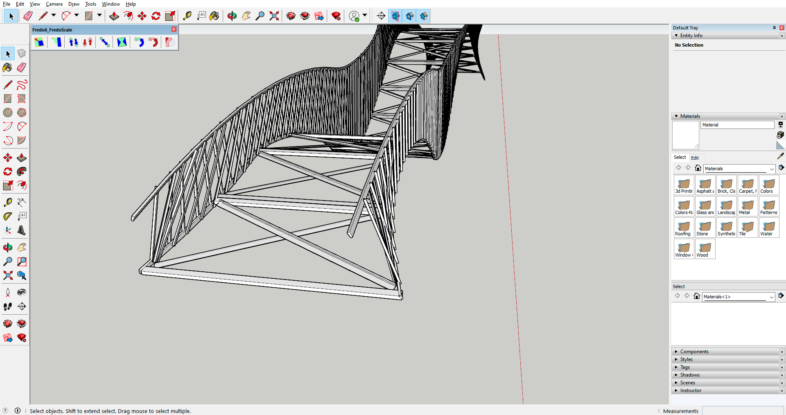

Как сделать мост "Питон"
Шаг 1
Нарисуем верхние с нижние перила моста и присоединим к ним балки примерно под углом 20°, как показано на картинке выше.
Шаг 2
Уменьшим длину балок до нужного размера, как показано на картинке выше.
Шаг 3
Скопируем балки на другую сторону перил, отразим каждую из них, и повернём так, чтобы одна балка пересекала две балки на другой стороне, также уменьшив или увеличив до нужного размера, как показано на рисунке выше.

Шаг 4
Теперь скопируем и отразим всё конструкцию и соединим балками две получившиеся конструкции, как показано на рисунке выше.

Шаг 5
Теперь сделаем настил и зальём всё нужными текстурами, как показано на рисунке выше.
Мост "Питон" готов!
Copyright Python&Porfolio © 2020 - - все права защищены.